第4章
物体在阻滞介质中的圆运动
引理3
令PQR为一螺旋线，它以相同角度与所有的半径SP，SQ，SR等相交。作直线PT与螺旋相交于任意点P，与半径SQ相交于T；作PO，QO与螺旋线垂直，并相交于O，连接SO：如果点P和Q趋于重合，则角PSO成为直角，而乘积TQ·2PS与PQ2 的最后的比成为相等的比。
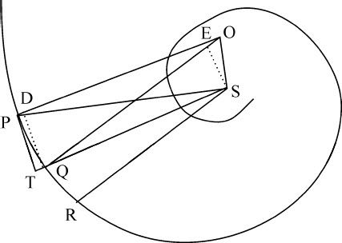
因为，由直角OPQ，OQR中减去相等的角SPQ，SQR，余下的角OPS，OQS仍相等。所以，通过点O，P，S的圆必定也通过点Q。令点P与Q重合，则该圆在P，Q重合处与螺旋线相切，因而与直线OP垂直相交。所以，OP成为该圆的直径，而角OSP位于半圆上，所以是直角。
证毕。
作QD，SE垂直于OP，则几条线最后的比等于
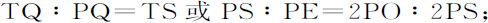
以及
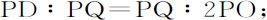
将相等比式中对应项相乘，
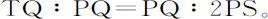
因而PQ2 等于TQ·2PS。
证毕。
命题15 定理12
如果各点的介质密度反比于由该点到不动中心的距离，且向心力正比于密度的平方，则物体沿一螺旋线运动，该线以相同角度与所有转向中心的半径相交。
设所有条件与前述引理相同，延长SQ到V，使得SV等于SP。令物体在任意时间内在有阻力介质中掠过极小弧PQ，而在二倍的时间里掠过极小弧PR；而阻力造成的弧的减量，或它们与在无阻力介质中相同时间内所掠过的弧的差，相互间的比值正比于生成它们的时间的平方；所以弧PQ的减量是弧PR的减量的四分之一。因而，如果取面积QSr等于面积PSQ，则弧PQ的减量也等于矩线Rr的一半；所以阻力与向心力之间的比等于短线
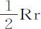
与同时生成的TQ的比。因为物体在点P受到的向心力反比于SP2 ，而（由第一编引理10）该力所产生的短线TQ正比于一个复合量，它正比于该力以及掠过弧PQ所用的时间的平方（在此我略去阻力，因为它比起向心力来为无限小），由此导出TQ·SP2 ，即（由上述引理），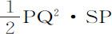
，正比于时间的平方，因而时间正比于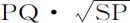
；而在该时间里物体掠过弧PQ的速度，正比于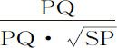
或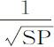
，即，反比于SP的平方根。而且，由相同理由，掠过弧QR的速度反比于SQ的平方根。现在，弧PQ与QR的比等于速度的比；即，等于SQ比SP的平方根，或等于SQ比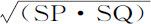
；而因为角SPQ，SQr 相等，面积PSQ，QSr 相等，弧PQ比弧Qr 等于SQ比SP。取正比部分的差，得到，弧PQ比弧Rr 等于SQ比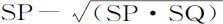
，或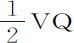
。因为，点P与Q重合时，SP－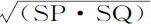
与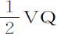
的最终比值是相等比值。由于阻力产生的弧PQ的减量或其二倍Rr ，正比于阻力与时间的平方的乘积，所以阻力正比于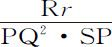
。取PQ比Rr 等于SQ比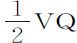
，因而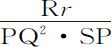
正比于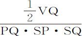
，或正比于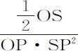
。因为点P与Q重合时，SP与SQ也重合，三角形PVQ成为一直角三角形；又因为三角形PVQ，PSO相似，PQ比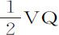
等于OP比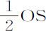
。所以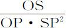
正比于阻力，即，正比于点P的介质密度与速度平方的乘积。抽去速度的平方部分，即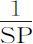
，则余下P处的介质密度，它正比于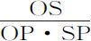
。令螺旋线为已知的，因为OS比OP为已知，点P处介质密度正比于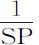
。所以在密度反比于距离SP的介质，物体将沿该螺旋线运动。证毕。
推论Ⅰ．在任意处所P的速度，恒等于物体在无阻力介质中受相同向心力以相同距离做圆周运动的速度。
推论Ⅱ．如果距离SP已知，则介质密度正比于
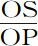
，但如果距离未知，则正比于 。所以螺旋线适用于任何介质密度。
。所以螺旋线适用于任何介质密度。
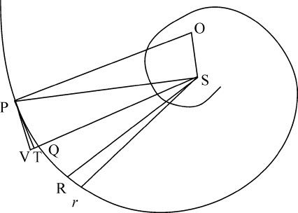
推论Ⅲ．在任意处所P的阻力比同一处所的向心力等于
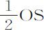
比OP。因为二力相互间的比等于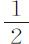
Rr 比TQ，或等于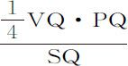
比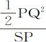
，即等于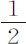
VQ比PQ，或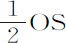
比OP。所以给定了螺旋线，也就给定了阻力与向心力的比值；反之，由该比值也可求出螺旋线。推论Ⅳ．除非阻力小于向心力的一半，物体不会沿螺旋线运动。令阻力等于向心力的一半，螺旋线与直线PS重合，在该直线上，物体落向中心，其速度比先前讨论过的沿抛物线（第一编定理10）在无阻力介质中下落的速度，等于1比2的平方根。所以下落时间反比于速度，因而是给定的。
推论Ⅴ．因为在到中心距离相等处，螺旋线PQR上的速度等于直线SP上的速度，螺旋线的长度比直线PS的长度为给定值，即，等于OP比OS；沿螺旋线下落的时间与沿直线下落的时间的比也为相同比值，因而是给定的。
推论Ⅵ．如果由中心引出两条任意半径作两个圆；保持二圆不变，使螺旋线与半径PS的交角任意改变；则物体在两个圆之间沿螺旋线环绕的圈数正比于
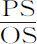
，或正比于螺旋线与半径PS夹角的正切；而同一环绕的时间正比于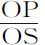
，即正比于同一个角的正割，或反比于介质密度。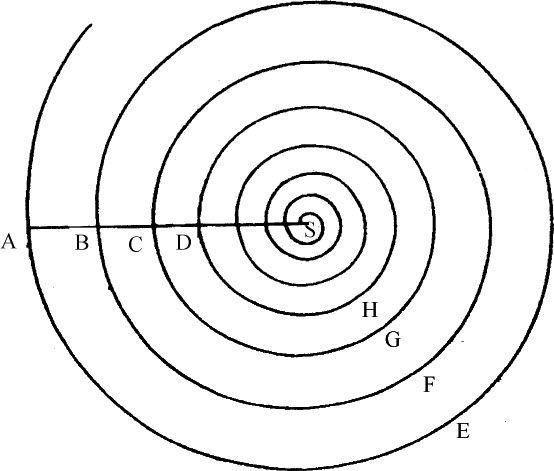
推论Ⅶ．如果物体在密度反比于处所到中心距离的介质中沿任意曲线绕该中心运动，且在B点与第一个半径AS的交角与在A点相同，其速度与在A点的速度的比正比于到中心的距离的平方根（即，等于AS比AS与BS的比例中项），则该物体将连续掠过无数个相似的环绕轨道BFC，CGD，等等，将半径AS分割为连续正比的部分AS，BS，CS，DS等。但环绕周期正比于轨道周长AEB，BFC，CGD等，反比于在这些轨道起点A，B，C等处的速度，即，正比于
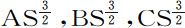
。而物体到达中心的总时间比做第一个环绕的时间，等于所有连续正比项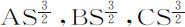
等直至无穷的和，比第一项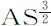
；即非常近似地等于第一项 比前两项的差
比前两项的差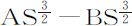
，或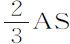
比AB。因而容易求出总时间。推论Ⅷ．由此也可以足够近似地推出，物体在密度均匀或按任意设定规律变化的介质中的运动。以S为中心，以连续正比的半径SA，SB，SC等画出数目相同的圆；设在以上讨论的介质中，在任意两个圆之间的环绕时间，比在相同圆之间在拟定介质中的环绕时间，近似等于这两个圆之间拟定介质的平均密度，比上述介质的平均密度；而且在上述介质中上述螺旋线与半径AS的交角的正割正比于在拟定介质中新螺旋与同一半径的交角的正割；以及在两个相同的圆之间环绕的次数都近似正比于交角的正切；如果在每两个圆之间的情形处处如此，则物体的运动连续通过所有的圆。由此方法可以毫不困难地求出物体在任意规则介质中环绕的运动和时间。
推论Ⅸ．虽然这些偏心运动是沿近似于椭圆的螺旋线进行的，但如果假设这些螺旋线的若干次环绕是在相同距离进行的，而且其倾向于中心的程度与上述螺旋线是相同的，则也可以理解物体是怎样沿着这螺旋线运动的。
命题16 定理13
如果介质在各处的密度反比于由该处到不动中心的距离，而向心力反比于同一距离的任意次幂；则物体沿螺旋线的环绕与所有指向中心的半径都以给定角度相交。
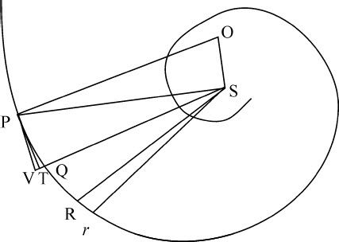
本命题的证明与前一命题相同。因为如果在P处的向心力反比于距离SP的任意次幂SP n ＋1 ，其指数为n ＋1；则与前者相同，可以推知物体掠过任意弧PQ的时间正比于PQ
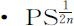
；而P处的阻力正比于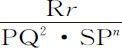
，或正比于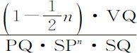
，因而正比于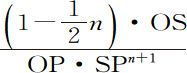
，即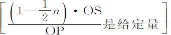
反比于SP n ＋1 。所以，由于速度反比于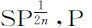
处的密度反比于SP。推论Ⅰ．阻力比向心力等于
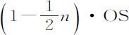
比OP。推论Ⅱ．如果向心力反比于SP3 ，则
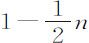
等于O；因而阻力与介质密度均为零，情形与第一编命题9相同。推论Ⅲ．如果向心力反比于半径SP的任意次幂，其指数大于3，则正阻力变为负值。
附注
本命题与前一命题均与不均匀密度的介质有关，它们只适用于物体运动如此之小的场合，以至于对物体一侧的介质密度高出另一侧的部分可以不予考虑。此外，等价地，我还设阻力正比于密度。所以，在阻力不正比于密度的介质中，密度必须迅速增加或减小，使得阻力的出超或不足部分得以抵消或补充。
命题17 问题4
一个物体的速度规律已知，沿一条已知螺旋线环绕，求介质的向心力和阻力。
令螺旋线为PQR。由物体掠过极小弧段PQ的速度可以求出时间；而由正比于向心力的高度TQ，以及时间的平方，可以求出向心力。然后由相同时间间隔中画出的面积PSQ和QSR的差RSr ，可以求出物体的变慢；而由这一变慢可以求出阻力和介质密度。
命题18 问题5
已知向心力规律，求使一物体沿已知螺旋线运动的介质各处的密度。
由向心力必定可以求出各处的速度；然后由速度的变慢可以求出介质密度。这与前一命题相同。
不过，我在本编命题10和引理2中已解释过处理这类问题的方法；不拟再向读者详细介绍这些繁琐的问题。现在我将增加某些与运动物体的力以及该运动发生于其中的介质的密度和阻力有关的内容。